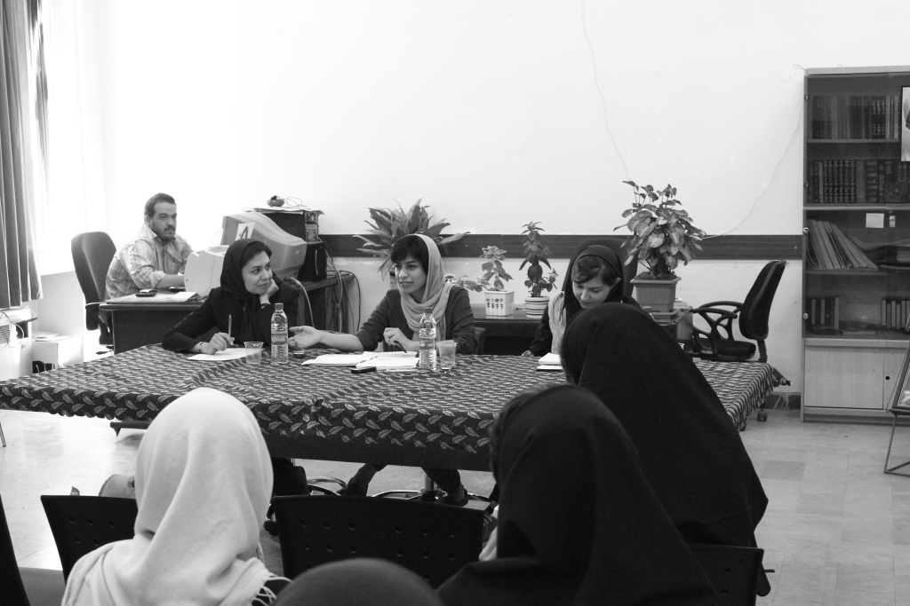

|
|
در نشست خبری شکایت به دیوان عدالت در خصوص سهمیه بندی جنسیتی مطرح گردید: آموزش برابر، حق قانونی زنان است
سه شنبه26 شهریور 1392

تا قانون خانواده برابر: امروز دوشنبه بیست و پنجم شهریور ماه نشست خبری مربوط به شکایت سیزده نفر از فعالین جنبش زنان و دانشجویی به دیوان عدالت اداری با حضور خبرنگاران و تعدادی از شاکیان و یکی از وکلای آنها برگزار شد.
تدا وحیده مولوی از فعالان زنان در ارتباط با دلایل شکایت و مهم بودن امر آموزش برای حاضرین صحبت کرد وی در این زمینه اظهار داشت : توضیح انگیزه شکایت ما پیچیده نیست. هر شهروندی می تواند ضرورت حق طبیعی آموزش برابر را برای حل چندین مساله مهم اجتماعی- اقتصادی- سیاسی- فرهنگی در اولویت قرار دهد.
در دسترس نبودن آموزش برابر جامعه را مختل می کند و فراتر از منفعت شخصی بر کل جامعه تاثیر می گذارد. گروه های اجتماعی بدون حساسیت نسبت به فرصت آموزش برابر، به سختی می توانند مطالبات اجتماعی بعدی را در جامعه نامتعادل و محروم از آموزش همگانی محقق کنند.
 آموزش و مهارت آموزی به طور مستقیم به داشتن شغل و کسب درآمد منجر می شود؛ داشتن شغل و در آمد به طور مستقیم رونق اقتصادی را میسر می کند.
آموزش و مهارت آموزی به طور مستقیم به داشتن شغل و کسب درآمد منجر می شود؛ داشتن شغل و در آمد به طور مستقیم رونق اقتصادی را میسر می کند.
 آموزش و مهارت آموزی کارآفرینی را سرعت می دهد؛ کارآفرینی به رونق اقتصادی می انجامد.
آموزش و مهارت آموزی کارآفرینی را سرعت می دهد؛ کارآفرینی به رونق اقتصادی می انجامد.
 آموزش با بالابردن آگاهی فردی سلامت خانواده را بهبود می بخشد.
آموزش با بالابردن آگاهی فردی سلامت خانواده را بهبود می بخشد.
 آموزش و مهارت آموزی باعث شادی و احساس رضایت شخصی می شود.
آموزش و مهارت آموزی باعث شادی و احساس رضایت شخصی می شود.
 آموزش و مهارت آموزی با رشد آگاهی عمومی سلامت جامعه را ارتقا می بخشد.
آموزش و مهارت آموزی با رشد آگاهی عمومی سلامت جامعه را ارتقا می بخشد.
 آموزش و مهارت آموزی استقلال فردی را بالا می برد.
آموزش و مهارت آموزی استقلال فردی را بالا می برد.
 آموزش و مهارت آموزی مشارکت سیاسی- اقتصادی- اجتماعی را بیشتر می کند و مشارکت سیاسی- اقتصادی- اجتماعی سرمایه اجتماعی را افزایش می دهد.
آموزش و مهارت آموزی مشارکت سیاسی- اقتصادی- اجتماعی را بیشتر می کند و مشارکت سیاسی- اقتصادی- اجتماعی سرمایه اجتماعی را افزایش می دهد.
در مقابل:
 عدم آموزش و مهارت آموزی به بی کاری می انجامد. بی کاری مهاجرت را بیشتر می کند.
عدم آموزش و مهارت آموزی به بی کاری می انجامد. بی کاری مهاجرت را بیشتر می کند.
 عدم آموزش برابر باعث احساس سرخوردگی و بی فایدگی می شود.
عدم آموزش برابر باعث احساس سرخوردگی و بی فایدگی می شود.
 عدم آموزش برابر دسترسی به فرصت ها را نامتعادل می کند و شرایط از هم پاشیدگی خانواده را بیشتر می کند.
عدم آموزش برابر دسترسی به فرصت ها را نامتعادل می کند و شرایط از هم پاشیدگی خانواده را بیشتر می کند.
در نبود فضای امن دانشگاهی، دانشجویان ذینفع ترجیح دادند رشته های پایین تر از سطح سوادشان را به جای رشته هایی که حقشان بود و برای آن دست کم سه یا چهار سال برنامه ریزی کرده بودند، بخوانند ولی با شکایت مهر ستاره دار شدن نخورند، یا خرج هنگفت دانشگاه های مالی را تقبل کنند و یا حتی از کشور خارج شوند ولی حقشان را از راه قضایی مطالبه نکنند. بنابراین وظیفه گروه های اجتماعی است که خارج از منافع تک تک افراد، منفعت عمومی جامعه را در نظر بگیرند تا نسل آینده در فضایی بهتر و با برابری بیشتر زندگی کنند.
پس از آن فرشته طوسی فعال جنبش دانشجویی و زنان با تاریخچه ای از آموزش پیش از انقلاب سخنانش را آغاز کرد و گفت : حق آموزش همیشه یکی از مطالبات جدی زنان بوده، اما با این وجود همواره زنان در رسیدن به این حق با چالشهایی مواجه بودهاند. با وجود اینکه طبق اصل 18 متمم قانون اساسی در دوران مشروطه، دولت مسئول تاسیس مدارس و فراهم کردن امکان تحصیل رایگان و اجباری برای همگان بود اما به دلایل مختلف بیشتر دختران نمیتوانستند به مدرسه بروند و فعالان زنان به صورت خودجوش برای دختران مدرسه ایجاد میکردند. زنان در دوران پهلوی برای اولین بار به آموزش عالی راه یافتند، گفت: بعد از انقلاب به تحصیلات زنان و سواد آموزی آنان تاکید شد و بر اساس اصل سوم قانون اساسی، تامین آموزش و پرورش رایگان برای همه و تسهیل و گسترش آموزش عالی و رفع تبعیضات ناروا و ایجاد امکانات عادلانه برای همه در زمینههای مادی و معنوی وظیفه دولت شد.
طوسی در ادامه با اشاره به اصل سی ام قانون اساسی که دولت را ملزم به فراهم سازی وسایل آموزش و پرورش رایگان تا پایان دوره متوسطه و گسترش زمینههای تحصیلات عالی تا سرحد خودکفایی به طور رایگان برای همه مردم می نماید گفت: مطابق با قانون هیچ گونه تبعیضی میان مردان و زنان برای دستیابی به آموزش عالی در بعد از انقلاب نباید وجود داشته باشد و هیچ ارگانی نباید به خود اجازه دهد که چنین تبعیضی علیه زنان ایجاد شود. اما با وجود این در دهه نخستین بعد از انقلاب محتوای کتابهای درسی به سمت تفکیک نقشهای جنسیتی حرکت کرد به طوری که در مقابل 27 شغل برای مردان تنها یک شغل آموزگاری برای زنان تعریف شد و سایر نقشها بر محور وظایف مادری و همسری زنان تعریف شد.
این فعال زنان و دانشجویی در ادامه اظهار داشت: با وجود آنکه براساس تصویب قانونی در اوایل انقلاب، ادامه تحصیل دختران، در برخی از رشتههای دانشگاهی با محدودیت مواجه شده بود ولی رفع محدودیت پذیرش داوطلبان دختر در برخی رشتههای دانشگاهی در تاریخ 12 اردیبهشت 1368، توسط شورای عالی انقلاب فرهنگی به تصویب رسید به همین جهت سهم داوطلبان دختر از سال 1377 گسترش یافت. گزارش وضعیت زنان در آموزش عالی کشور در سال 1384 نشان میدهد که تعداد داوطلبان زن در آزمون سراسری دانشگاهها و مراکز آموزش عالی دولتی در سال 1386، 64 درصد کل داوطلبان بوده است که این روند در دهه پیش از آن 27 / 24 درصد رشد کرده است. تعداد پذیرفته شدگان زن در مراکز آموزش عالی دولتی 86-85 نسبت به 76-75 بیشتر از 3 برابر و نسبت به 3 دهه پیش از آن 20 برابر شده است. : در دفترچه کنکور سال 1390 سهمیه زنان در 2 رشته دانشگاه به صفر رسید و در سال 1391 این اقدام رشد چشمگیری یافت به نحوی که سهمیه زنان در 77 رشته در 36 دانشگاه به صفر رسید و نه تنها زنان از انتخاب رشتههای فنی و مهندسی که مردانه تعبیر میشوند محروم شدند بلکه چندین دانشگاه از پذیرش آنها در رشتههایی که سابقه فعالیت گسترده ای در آن دارند از جمله رشتههای راهنمایی، مشاوره، مددکاری اجتماعی و رشته فرش دستباف محروم شدند.
این فعال دانشجویی گفت: با اقدامات انجام شده به این نتیجه رسیدیم که باید حرکتی اعتراضی در این زمینه شکل بگیرد تا چنین تبعیضهایی علیه زنان ایجاد نشود بنابراین 13 نفر از فعالان زنان و فعالان اجتماعی برای این سهمیه بندیهای جنسیتی که برخلاف اصول 3، 19، 20، 21، 30 و 40 قانون اساسی به دیوان عدالت اداری شکایت کردند.
او ادامه داد: در دو مرحله شکایتها به دیوان عدالت اداری تقدیم شد. یک بار در فروردین 1392 و یک بار در شهریور 1392 تا به این صورت شکایت بر علیه هر دو دولت دهم و یازدهم ثبت شده باشد و قابل پیگیری از هر دو جنبه ابطال تبصره و اجرای سهمیه برابر در زمان حال باشد.
در ادامه متن دادخواست شاکیان از وزارت علوم، سازمان سنجش و 36 دانشگاه خوانده شد. برگزارکنندگان این نشست در ادامه پیگیری موضوع از بروشورهایی اعتراضی مرتبط با این طرح گفتند که آماده گردیده و توسط مردم امضاء شده اند و به مجلس فرستاده خواهند شد.
شاکیان همچنین اظهار داشتند که با مسئولین دولتی تا به امروز هیچگونه دیدار حضوری ای نداشته اند و آقای توفیقی حمایتشان را از این شکایت در مصاحبه با ایسنا بیان کرده اند .
جلسه پرسش و پاسخ با حضور زهرا مینویی یکی از وکلای شاکیان ادامه یافت. در ابتدا یکی از حاضرین با بیان این مطلب که با توجه به اینکه در سال 92 نیز شاهد اعمال تبعیض جنسیتی بوده ایم آیا اقداماتی در این خصوص تا به امروز صورت گرفته است و و سوال کرد که آیا در بین شاکیان افراد ذینفع نیز حضور دارند؟
در پاسخ فرشته طوسی گفت: در سال 92 ما یک نزول 36 یا 37 درصدی در تبعیض جنسیتی داشته ایم ولی فعلا ما فقط در خصوص سهمیه بندی سال 91 شکایت کردیم که از این امر پیشگیری کنیم و یکباره در سال 93 با یک صعود غیرمنتظره مواجه نشویم. همچنین با افراد ذینفع نیز صحبت کرده ایم ولی بخاطر فضای بد امنیتی که در دانشگاه ها و جامعه وجود داشت ترسیدند شکایت کنند و در همان رشته هایی که قبول شده بودند هم رد شوند. بنابراین شکایت را علنی نکردند.
سوال بعدی در ارتباط با وضعیت پرونده بود که زهرا مینویی وکیل پایه یک دادگستری در پاسخ به این سوال گفت: در ایران پروسه های قضایی طولانی است. در دیوان همه پرونده ها غیر حضوری هستند مگر اینکه قضات تشخیص دهند که حضور افراد در یک پرونده خاص ضروری است. در ضمن ما 38 خوانده داریم که باید دادخواست به آنها که هر کدام در یک شهر هستند ارسال شود و بعد از اینکه آنها جواب دادند دیوان در این خصوص تصمیم می گیرد، که پروسه ای طولانی مدت است.
در ادامه یکی از حاضران از مینویی پرسید با توجه به اینکه :یکی از موارد الزام خواندگان بر حذف مصوبه است و با توجه به اینکه شاکیان ذینفع نیستند آیا این امر امکان پذیر است؟ وی در پاسخ به این سوال گفت: من در این زمینه خیلی تحقیق کردم چون شاکی ها ذینفع نیستند اگر رای بر ابطال مصوبه داده شود افرادی که با این مصوبه، در حقشان اجحاف شده است، می توانند شکایت کنند و برگردند به رشته ای که حقشان بوده است.
سوال بعدی که توسط یکی از خبرنگاران حاضر در نشست مطرح گردید در ارتباط با پرداخت جریمه از سوی دانشگاه ها در صورت موفقیت پرونده به جریان افتاده، بود. وکیل پرونده در پاسخ گفت: اگر پرونده موفق شود ما دیگر این اتفاق را در آینده نخواهیم داشت و افراد می توانند سابقه شان و کارنامه کنکورشان را بیاورند که در رشته ای می توانستند قبول شوند و نشده اند و برای آنها می تواند تغییر رشته یا دانشگاه وجود داشته باشد ولی جریمه ای برای دانشگاهها وجود ندارد.
یکی از حضار به عنوان آخرین سوال از ارائه امضاها به مجلس و اثربخشی آن پرسید که زهرا مینویی در جواب گفت: ما باید از همه چیز استفاده کنیم. کلا اگر این قضیه در مجلس هم مطرح شود حتما در تصمیم قضات در دیوان موثر خواهد بود.
در انتهای نشست یکی دیگر از شاکیان پرونده، پرستو اله یاری به ارائه آماری کمی پرداخت و راجع به تعداد ظرفیت های دانشگاهی گفت که طبق دفترچه های انتخاب رشته سال 91 و مقایسه آنها با سال 90، در رشته ها و دانشگاه های مشابه در دو سال برای پسران وجود داشته ولی ظرفیت دختران در آن رشته-شهرها صفر شده است.
کل ظرفیت اختصاص یافته به پسران در رشته- شهرهایی که سهم دختران صفر شده، 5078 نفر است. از بین 36 دانشگاهی که جز خواندگان این شکایت هستند، دانشگاه محقق اردبیلی بیشترین ظرفیت حذف دختران را دارد که 661 نفر پسر در رشته هایی که سهم دختران صفر در نظر گرفته شده است پذیرفته شدند. دومین دانشگاه بیشترین ظرفیت حذفی دختران، دانشگاه تربیت دبیر شهید رجایی تهران با تعداد 398، سومین دانشگاه صنعت نفت با 323 نفر، چهارمین دانشگاه اراک و همین طور دانشگاه بین المللی امام خمینی قزوین هر کدام 270 نفر و پنجمین دانشگاه اصفهان و بیرجند هر کدام 255 نفر ظرفیت رشته هایی را که دختران از آنها حذف شدند به پسران اختصاص دادند.
علاوه بر آن بیشترین حذف سهمیه دختران مربوط به گروه مهندسی بود با 3240 ظرفیت و پس از آن گروه کاردانی ها با 270 ظرفیت و پس از آن هم گروه علوم انسانی و مدیریت با 239 ظرفیت بیشترین ظرفیت حذف سهمیه دختران را داشتند و بقیه سهمیه های حذف شده مربوط به دیگر گروه های آزمایشی بود که به نظر می رسد عمدی در حذف سهمیه رشته های پرطرفدار در بازار کار برای زنان وجود داشته است.